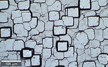
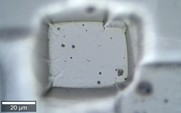

|
物镜选择
|
许多物镜适用于TS测量，但它们的特性不同，并非所有物镜都推荐与所有样品组合使用。一些物镜已经过测试并推荐用于TS操作。如果选择了任何未经测试的物镜，会出现警告信息，但仍然可以使用它。放大倍率低于20x的物镜不适用。
为正确选择物镜，应考虑以下方面：


图1：20x/0.5 NA物镜的视频图像（左）和100x/0.9 NA物镜的视频图像（右）
以下台阶高度通常适用于标准物镜：
100x 物镜： +/-4 µm
50x 物镜： +/-16 µm
20x 物镜： +/-100 µm
因此，如果样品具有高台阶，小放大倍率的物镜更适合，而测量尖锐边缘则需要高NA。